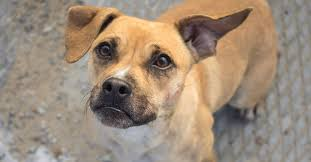

ONG Rescataditos
Rescatar a un animal del dolor más que un acto de amor, es un acto de justicia
Rescatar a un animal del dolor más que un acto de amor, es un acto de justicia
Tu ayuda mensual permite que un rescatadito reciba alimento, atención médica y contención.
No es solo apoyo: es compañía, es esperanza.

Hola soy Tobi!
Tengo 4 años soy Curioso, atento y siempre estoy alerta.
Me
encanta explorar rincones nuevos y recibir caricias en la cabeza, me conecta rápido con humanos
tranquilos. Me llevo bien con gatos y perros pequeños, aunque necesita tiempo para confiar.
Hola soy Luma!
Tengo 8 meses soy dulce, juguetona y muy expresiva.
Amo los juguetes blandos, los mimos y dormir
cerca de alguien.
Me gustan las voces suaves y los gestos cariñosos.
Soy perfecta para hogares con otros cachorros o
animales pacientes.
Hola me llamo Roco!
Tengo 6 años, soy sereno, leal y agradecido. Disfruto del sol, los paseos cortos y las siestas largas
Tengo una mirada que abraza, ideal para personas mayores o sensibles.
Soy muy sociable con otros perros, ignoro a los gatos y respeta espacios compartidos